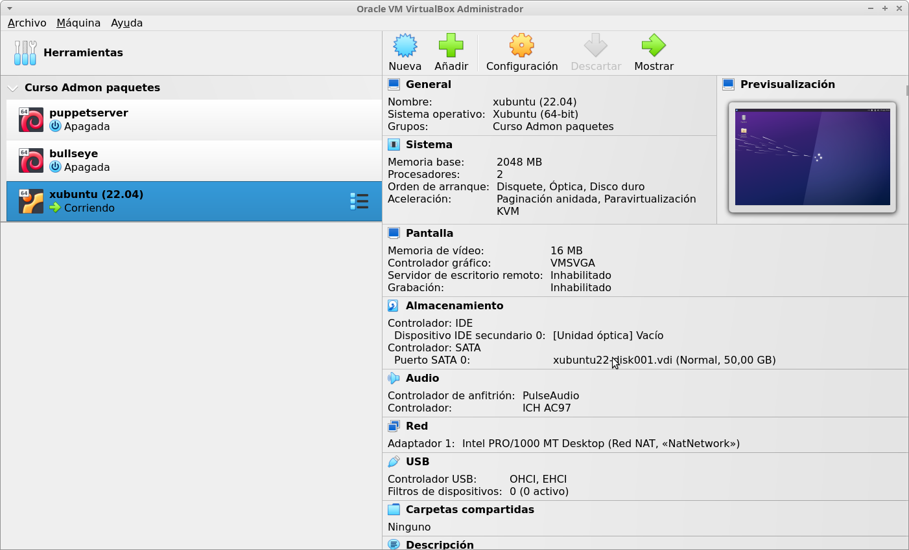

Creación de la máquina virtual xubuntu
Crea una máquina virtual con las siguientes características:
- Nombre: xubuntu.
- RAM: 2 GB.
- Procesadores: 2.
- Disco duro: 50 GB.
- Tarjeta de red: Conectado a red NAT.
Te adjuntamos una imagen para que compruebes si has asignado el hardware indicado:
